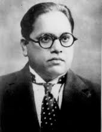
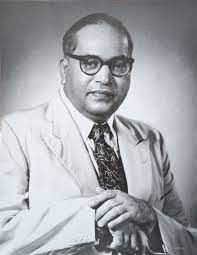

“We are Indians, Firstly and Lastly” -Dr. B.R Ambedkar

“We are Indians, Firstly and Lastly” -Dr. B.R Ambedkar
“Life should be great rather than long.”
Education
Dr. B.R. Ambedkar's education was a remarkable journey of perseverance and determination, considering the social challenges and discrimination he faced as a member of the Dalit community. Born in a small village in Maharashtra, India, Ambedkar overcame numerous obstacles to pursue his academic aspirations.
He started his early education at local schools and then moved to Bombay (now Mumbai) for further studies. Despite facing caste-based prejudices and ostracism, he excelled academically and secured scholarships to pursue higher education. In 1907, he entered the prestigious Elphinstone College, where he earned a scholarship to study in the United States.
In 1913, Ambedkar sailed to America to join Columbia University and later pursued further studies at the London School of Economics. He acquired degrees in various fields, including economics, political science, and law, earning a Doctorate from Columbia in 1927. His academic achievements opened doors for him to advocate for the rights and upliftment of marginalized communities in India.
Dr. Ambedkar's education not only empowered him intellectually but also provided him with the knowledge and vision to be a social reformer, a prominent leader, and the chief architect of the Indian Constitution. Throughout his life, he stressed the importance of education as a catalyst for social progress and the key to breaking the chains of discrimination and untouchability. His legacy continues to inspire generations, and his dedication to education and social justice remains an integral part of his remarkable life story.
“I measure the progress of a community by the degree of progress which women have achieved..”
About
Dr. B.R. Ambedkar, born on April 14, 1891, was a leading figure in India's struggle for social equality and justice. Facing discrimination from a young age, he fought against caste-based oppression and worked tirelessly for the rights of Dalits and marginalized communities. Ambedkar's quest for education led him to become one of India's most educated leaders.
He played a pivotal role in drafting the Indian Constitution, ensuring it upheld principles of social justice, equality, and fundamental rights. Ambedkar's efforts led to the abolition of untouchability and the promotion of affirmative action for marginalized groups.
Throughout his life, he emphasized the importance of education and critical thinking, viewing them as essential tools for empowerment. Dr. B.R. Ambedkar's legacy continues to inspire millions, and his contributions to India's social and political landscape remain etched in history as a beacon of hope and progress for marginalized communities.
copyright © 2023 Manas-H